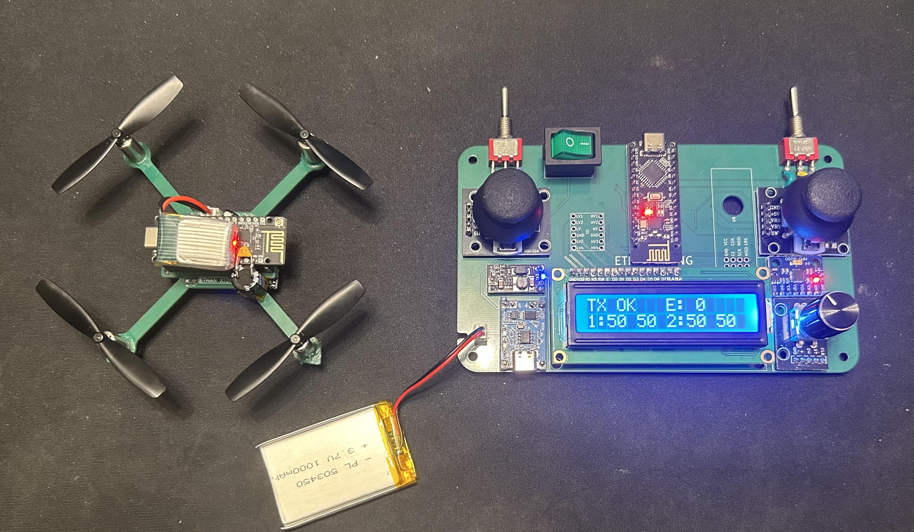

May 2026 - August 2026
Handheld 2.4 GHz Radio Controller and 9x8 cm Drone Built from Scratch
A fully custom handheld RC transmitter and drone including hardware, firmware, power system, and enclosure designed and built end to end on a PCB.

S1 · Overview
The goal was to create a fully functional RC transmitter and drone. By designing and building the system myself, I would have greater control over its design and functionality, making it easier to modify, adjust, and improve the system as needed. The transmitter includes an Arduino Nano, an NRF24L01 transceiver (an RF-Nano also works here), using custom SPI firmware. The transmitter includes two joysticks, a rotary encoder, 2 SPDT switches, a SPST power switch, a TP4056 Li-Po charger, a 3.7V to 5V boost converter, an MPU6050, an I²C LCD, and finally a 1000mAh 1S Li-Po battery.
The drone itself is a 9x8 cm quadcopter style drone with an RF-Arduino Nano, an MPU6050, a boost converter, a 380mAh 1S 25C Li-Po battery, 4 716 55000 RPM coreless motors, and a custom motor drive board. The motor drive board consists of the SI2300 MOSFET, 1N5819 flyback diode, and a 10kΩ pulldown resistor.
S2 · RC Controller Transmitter
The transmitter is built around an Arduino Nano, which reads the joysticks, switches, and rotary encoder, and sends the data over SPI to the NRF24L01 transceiver. This setup was inspired by many different YouTube videos but I wanted to make my own PCB and firmware from scratch. I first created the circuit on a breadboard, where I confirmed my wiring and logic worked. After that, I began designing the PCB in KiCAD. In my PCB, I moved off USB power entirely and onto a rechargeable LiPo pack. A TP4056 module handles charging and a boost converter input so the transmitter can be fully powered down without disconnecting the battery from the charging circuit. The boost converter steps the LiPo's 3.7V up to a stable 5V rail. I also added 2 SPDT switches on each joystick to allow for more precise input, such as switching between flight modes.
S3 · RC Drone
The drone's flight controller is built around an RF-Nano, an Arduino Nano with an NRF24L01 integrated directly onto the board which receives control packets from the transmitter and runs the flight loop. An MPU6050 communicates over I2C to provide the pitch, roll, throttle, and yaw data to the drone. Motor speed is controlled through four SI2300 N-MOSFETs driven by PWM (pins 3, 5, 6, 9), with 1N5819 flyback diodes protecting each MOSFET from the kickback of the coreless motors.
The firmware is based on the MultiWii-NRF24L01, which I adapted for this hardware layout. In KiCad, I mapped the four motor PWM outputs to D3, D5, D6, and D9, with the NRF24 CE and CSN lines on D7 and D8, and the MPU6050 on the Nano's hardware I2C pins (A4/A5). Power comes from a 1S Li-Po battery that goes into a boost converter, feeding the Nano's 5V directly. The frame pairs 716 coreless motors on an 87×79mm frame, chosen to balance thrust against the center of gravity of the drone.
S4 · PCB Design — KiCad
The boards were laid out in KiCad, I used my breadboard prototypes as a starting point to transfer them into schematics, working through footprint assignment, routing, and DRC/ERC before sending Gerbers to JLCPCB. The transmitter board added the LiPo charge/boost circuit and SPDT/SPST switch wiring that was missing from the initial design. The drone board is a single compact layout carrying the RF-Nano, MPU6050 breakout, the four SI2300 motor driver stages with flyback diodes, along with some decoupling capacitors, kept as small and light as possible for the 87×79mm frame.
S5 · Firmware — Packet Structure
The transmitter firmware reads all inputs, packs them into a fixed-size struct, and fires it over SPI to the NRF24 every 20 ms (50 Hz update rate). Using a struct ensures the receiver can unpack the exact same memory layout without fragile byte-by-byte parsing.
// Radio packet — matched exactly on receiver side
struct __attribute__((packed)) RF24Data {
uint8_t x1;
uint8_t y1;
uint8_t x2;
uint8_t y2;
uint8_t btn1;
uint8_t btn2;
int16_t posEnc;
uint8_t btnEnc;
int16_t accelX;
int16_t accelY;
int16_t accelZ;
int16_t gyroX;
int16_t gyroY;
int16_t gyroZ;
uint8_t sw1;
uint8_t sw2;
uint8_t _pad2[9];
};
On the drone side, the RF-Nano receives the same struct and maps each field directly into MultiWii's rcData[] array, so the packet is treated exactly like a normal RC receiver's channel data by the rest of the stabilization loop.
S6 · MultiWii GUI Configuration
Rather than hand-tuning PIDs blind, I used the MultiWii GUI
over USB to watch live sensor data and motor outputs while adjusting PID values.
Since my MPU6050 was mounted upside down, I had to remap the
ACC_ORIENTATION / GYRO_ORIENTATION macros in
Sensors.cpp to correct the inverted axes, then tuned P, D, and I in that
order to get a stable response. Arming the drone required two actions, turning the left SPDT switch
to the left and holding the right joystick down to minimize the throttle. Once released, the motors would start spinning.
Disarming was the opposite, moving the SPDT switch off the left side and moving the right joystick down again.
S7 · Full Stack